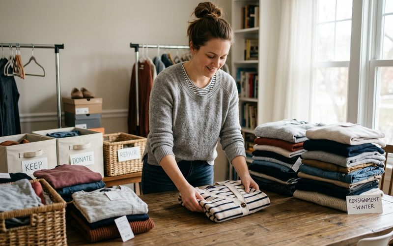

Chega um momento em que o guarda-roupa pede renovação, e as peças que não fazem mais sentido para você podem fazer perfeito sentido para outra pessoa. A consignação em brechós de curadoria é um caminho elegante e eficiente para esse ciclo: você libera espaço, valoriza o que tem, e contribui para que boas peças encontrem novas donas. Mas para que o processo funcione bem, a preparação das peças faz toda a diferença.
No Brechó Outra Vez, a consignação segue um modelo simples: 50% do valor de venda para a consignante, prazo de 90 dias, e critérios claros de aceitação. Mas antes de chegar até nós, há um trabalho de curadoria que começa no próprio guarda-roupa, e que você mesma pode fazer com atenção e carinho.
Antes de preparar as peças para consignação, faça uma curadoria honesta. Não tente consignar tudo o que você não usa mais, escolha o que tem real potencial de encontrar nova dona. Peças em bom estado de conservação, com marca ou qualidade reconhecível, de cortes que permanecem relevantes. Peças com manchas permanentes, desgastes acentuados ou danos estruturais não têm bom desempenho em consignação e podem frustrar expectativas.
Pergunte-se: se eu fosse comprar essa peça hoje, eu pagaria pelo menos X reais por ela nesse estado? Se a resposta for não, ela provavelmente não está pronta para consignação, ou precisa de um reparo antes.
Peças limpas e sem odor têm desempenho muito melhor em brechós. Lave ou mande lavar a seco as peças que necessitam, e arejá-las bem antes de empacotar. Uma dica específica para blusas e camisas: passe-as com ferro e dobrá-las cuidadosamente, a primeira impressão visual conta muito. Para tecidos delicados como seda e linho, use vapor ao invés de ferro direto para eliminar amassados sem riscos.
Um botão faltando, uma costura levemente aberta na bainha, um zíper que trava levemente, esses pequenos problemas são fáceis e baratos de resolver, mas impactam significativamente na percepção de valor da peça. Investir em reparos pontuais antes da consignação é uma estratégia que quase sempre se paga. Uma peça bem cuidada transmite que foi amada pela dona anterior, e isso tem valor emocional no ato da compra.
A consignação no Brechó Outra Vez é mais do que uma transação comercial, é uma participação no ciclo que acreditamos ser a forma mais inteligente e consciente de se relacionar com a moda. Cada peça que chega até nós bem preparada tem muito mais chances de encontrar a nova dona certa, de ser valorizada no preço que merece, e de continuar sua história com quem vai amá-la como você amou. É o ciclo funcionando em sua melhor versão.